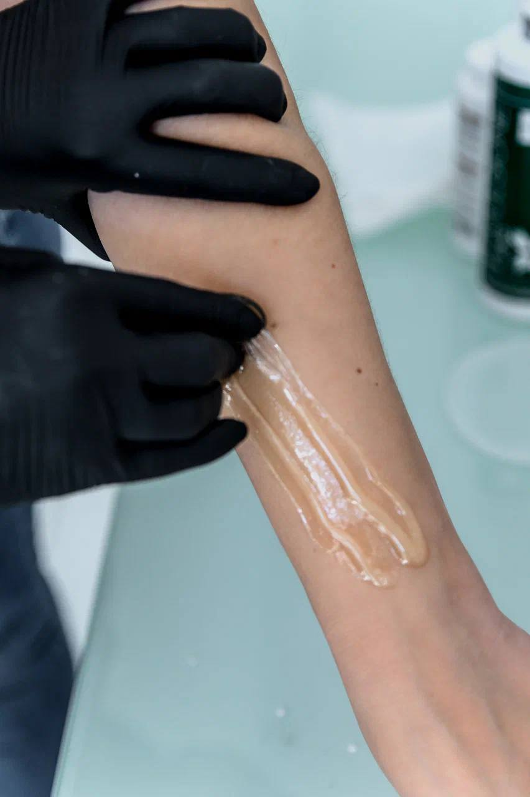
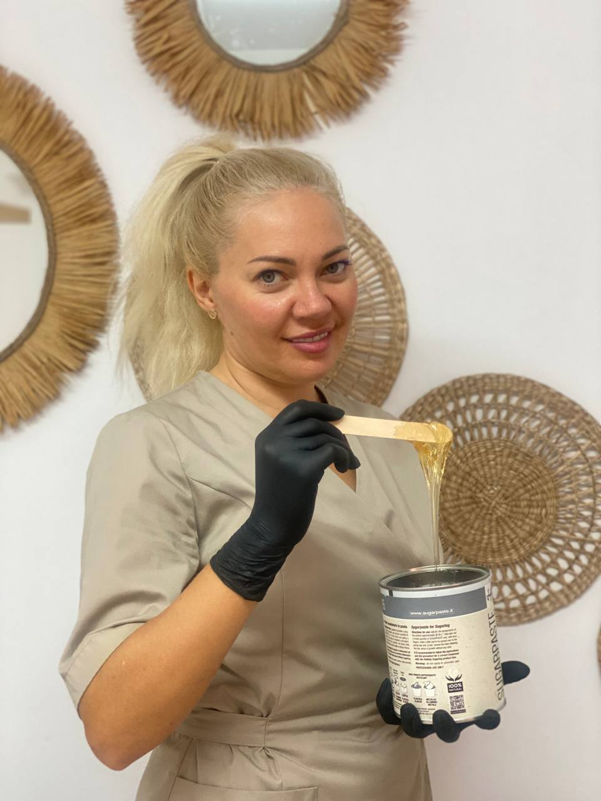

Hair Removal · Limassol
Professional waxing and natural sugaring for face and body. Gentle on skin, effective on hair — results that last 3–5 weeks.

Living in Cyprus means dealing with warm weather almost every day of the year. The beach, the pool, the outdoor terraces — smooth skin is not a seasonal luxury here, it is a year-round necessity. At Beauty by Anna Holod, our waxing and sugaring services are designed exactly for this lifestyle.
We offer both professional waxing and natural sugaring — allowing you to choose the method that best suits your skin type and hair growth pattern. Both methods remove hair from the root, leaving skin noticeably smooth for 3–5 weeks. With regular sessions, hair gradually grows back finer and thinner.
Our specialists work with precision and care — minimising discomfort and skin irritation, so you walk out of the studio feeling confident and comfortable.
Complete hair removal for legs, arms, underarms, bikini and other body areas. We use professional wax formulas suitable for different skin types and hair textures.
Hair removal with a paste made of sugar, lemon juice and water — 100% natural, hypoallergenic and biodegradable. Removes hair in the direction of growth, reducing breakage and ingrown hairs.
From classic bikini line to deep bikini — performed with maximum care and attention to hygiene. We offer both wax and sugar options; sugaring is particularly gentle for this sensitive area.
Precise hair removal for the upper lip, chin, cheeks and eyebrow line. We use specialised facial wax or sugar paste to ensure minimal skin trauma on delicate facial skin.
Quick and effective hair removal for underarms, full arms or forearms only. A popular express treatment that takes less than 30 minutes and can be easily combined with other services.
Full leg waxing (from ankle to hip) or lower leg only. One of the most popular services in Limassol, especially heading into the warmer months. Result lasts 3–5 weeks with smooth regrowth.
Waxing and sugaring at Beauty by Anna Holod are suitable for a wide range of clients — from those getting hair removal for the first time to experienced clients who simply want a reliable, hygienic and comfortable service in central Limassol.

Disposable spatulas and strips for every client. Wax is never double-dipped.
Professional technique reduces pain and skin trauma to a minimum.
Cyprus's climate demands smooth skin year-round — we are ready to serve you every month.
Express underarm or lip waxing in under 15 minutes. Full legs in 30–45 minutes.
Both wax and sugaring available — we help you choose the best option for your skin and hair type.
On Arch. Makarios III Avenue — Limassol's main street, easy to reach by car or on foot.
Waxing uses synthetic wax applied in the direction of hair growth and removed against it. Sugaring uses a natural paste made of sugar, lemon and water, applied against the hair growth direction and removed with it — which means less trauma to the follicle, less breakage and less irritation. Sugaring is generally gentler and better for sensitive skin.
Results typically last 3–5 weeks depending on your individual hair growth cycle. With regular sessions, hair grows back thinner and sparser over time, so the effect gradually extends.
We recommend waiting at least 24–48 hours before sun exposure after waxing or sugaring. The skin is more sensitive immediately after hair removal, and direct sun can cause irritation or hyperpigmentation. Always apply SPF to treated areas when outdoors in Cyprus.
Yes. Sugaring paste contains only natural ingredients and is hypoallergenic. It adheres only to the hair and dead skin cells — not to living skin — which makes it significantly gentler than wax. It is the preferred choice for clients with sensitive skin, prone to redness or irritation.
Most clients book every 3–5 weeks. In Cyprus's warm climate, many prefer to book more frequently — every 3 weeks — to maintain smooth skin year-round, especially during beach and outdoor season. With consistent sessions, regrowth gradually slows down.
Book your waxing or sugaring session at Beauty by Anna Holod in Limassol. Fast booking via Instagram or WhatsApp.